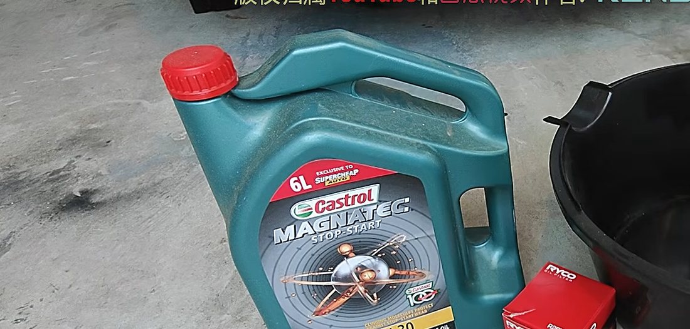
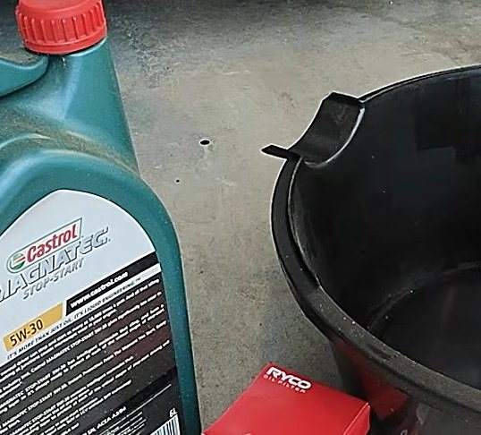
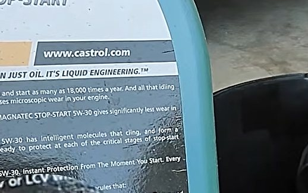
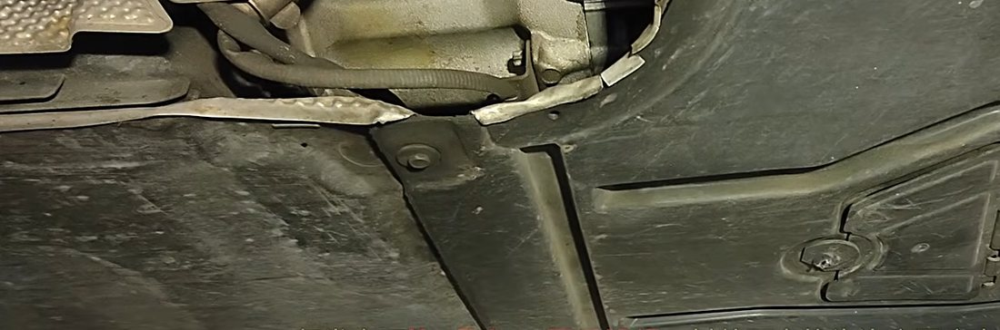
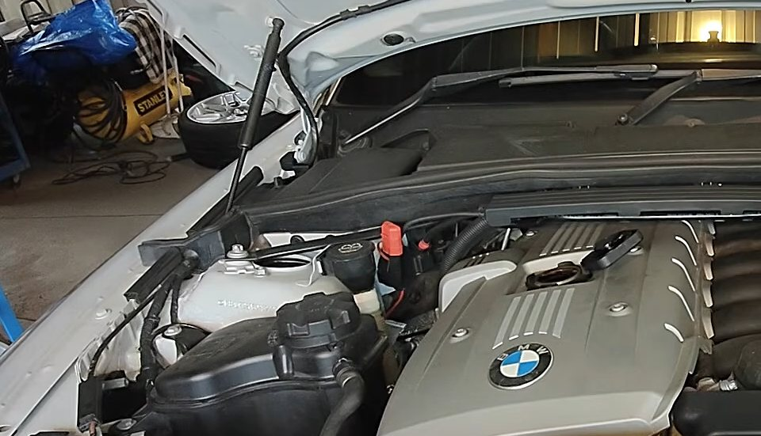
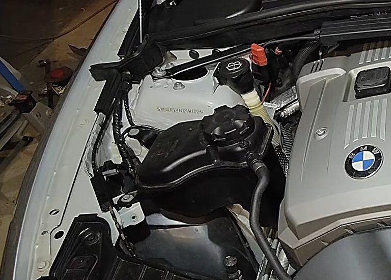
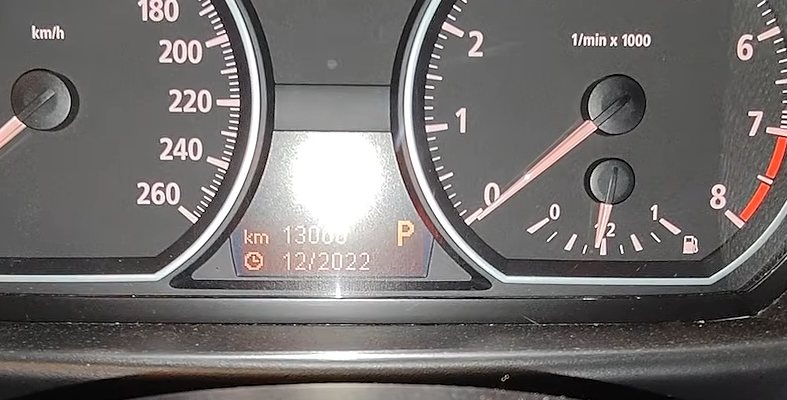
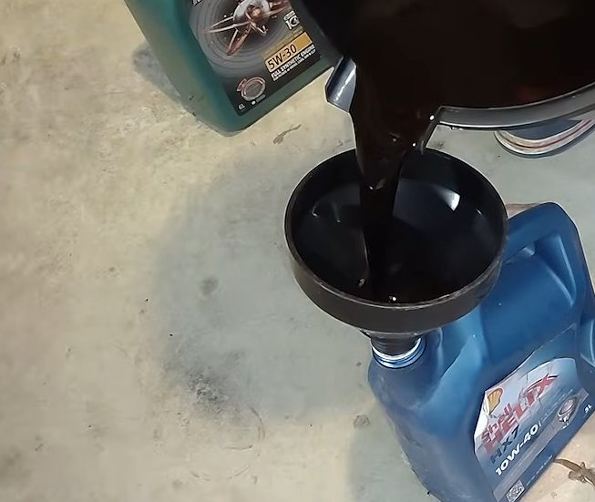

视频里给一台宝马 E90 换机油：架车、放油、换机滤、加 5 升、查油位、重置保养灯，全程只用到 17mm 套筒和一把扭矩扳手。下面按能照着做的顺序拆开，写清每一步的尺寸、扭矩和判断标准。
适合谁：车一年该做一次小保养、愿意钻一次车底、家里有套筒和千斤顶的人。视频作者说自己做完整个流程只要 5 分钟，连讲解带拍视频也就十几分钟00:09:3300:09:36。
不适合谁：找不到合适顶起点、地面是斜坡或软土的人；车还在质保期、不想自己动手的人。视频里反复强调的是安全：车必须落到铁支架上才能钻下去00:01:36。
视频里没说：这台车的具体年份型号配置、机油加注总量（只说了先加 5 升再看）、以及一次保养的总花费。下文凡是这三项，都不做补充。
清单很短。每次换机油需要一桶机油、一个对应型号的机滤00:00:2600:00:28，再加一个接油用的机油盘或水桶00:00:30。有漏斗更省事，倒油时不容易撒00:00:33；拧放油螺丝还需要车上对应规格的套筒或扳手00:00:38。

机滤按车型买就行。视频里这个是在 Supercheap Auto 买的00:01:17，作者说所有汽配商店都能订到任何车型的机滤，去店里问店员要型号即可00:01:1900:01:22。

买机油看两个参数：粘度和 API 等级00:00:4200:00:50。粘度这台车要 5W-3000:00:47；API 等级对汽油车不算关键，对精密的柴油车才重要00:00:5300:00:54。视频用的这桶只标了汽油机的 SN，所以便宜，因为它不是给柴油车设计的00:00:5800:01:00。这些数据每台车都不同，保养手册上都写着，没有就上网查00:01:0900:01:11。
| 要决定的事 | 视频里的说法 | 照着做 |
|---|---|---|
| 机油粘度 | 这台车用较稀的 5W-3000:00:47 | 以自己车的保养手册为准，别照抄别人的桶 |
| 要不要追全合成 | 作者说自己「非常不在意」，半合成就够；全合成贵一倍也不能跳过一次保养00:08:2300:08:28 | 每 1 万公里或一年换一次的人，两种油感觉不出区别00:08:3400:08:36 |
| 什么时候买油 | 原价 60–70 澳元，半价 30 几澳元，最便宜 22 澳元一桶00:08:0100:08:0300:08:04 | 等他半价再买，作者说这类店一年里有半年在打折00:08:09 |
| 架几个轮子 | 放油螺丝在油底壳最后边，只架车头就够00:01:5300:01:55 | 螺丝在侧面或靠前，就前后都架平，油才放得干净00:01:5900:02:03 |
| 千斤顶能不能直接钻 | 不行。必须落到铁支架上，千斤顶液压可能失效00:01:3600:01:40 | 铁支架撑住再进车底，作者说这样比修车厂升降机还稳00:01:45 |
| 机滤盖用什么拆 | 有专用套筒最好，没有就用钳子夹着拧00:03:0100:03:09 | 先确认自家机滤是内胆式还是铁壳式 |

先抬车头。这台车放油螺丝在油底壳最后边，所以只架前部，油就能彻底流出来00:01:5000:01:53。作者也提醒：有些车螺丝位置设计得好，根本不用架00:01:31。
抬起来之后有一个动作不能省——把车落到铁支架上。千斤顶的液压结构可能出问题，砸下来人就没了00:01:4000:01:42。作者说落到铁支架后的安全程度远高于修车厂的升降机00:01:45。
螺丝不在最后边的车，把前后都架起来、把车放平，放油时才不会有残留00:01:5900:02:0000:02:03。
钻到车底，先找到放油口。上面盖着一个塑料盖，打开后才能看到放油螺丝00:02:0800:02:11。接油的盘或桶要在拧螺丝之前就摆好00:02:13。

这颗螺丝是 17mm，用 17mm 套筒松开，机油就从下面放出来00:02:1500:02:1700:02:20。拔螺丝的时候手要稳，别让螺丝掉进下面的油桶里00:02:23。松开后就让它在下面漏一会儿00:02:26。
漏油的同时去打开引擎盖，把机油加注口的盖子拧开——上面通了气，下面的油漏得更快00:02:3100:02:32。
先认清自家是哪一种。这台车是内胆式，里面只有一个滤芯，不带铁壳00:02:3500:02:37。另一种更常见的是带铁壳的，整个拧下来、新的拧回去就行00:02:4000:02:4900:02:51。机滤有的在上面，有的在侧面或下面，但一般都在好拆的位置00:02:5300:02:5700:02:59。

用专用套筒把机滤盖拧开，没有专用套筒就用钳子夹着拧00:03:0100:03:0300:03:09。取出旧滤芯时检查底部有没有残留的橡胶圈——有就一并取出来换掉00:03:1900:03:2200:03:25。
旧滤芯直接放进新滤芯的盒子里，油不会渗得到处都是，整盒一起丢00:03:2700:03:3000:03:32。盖上那两个橡胶圈是一次性的，买机滤时盒里就带新的，所以没有不换的理由；不换下次可能漏油00:03:3700:03:4100:03:44。
装新橡胶圈前，在圈的外侧抹一点机油00:03:5800:04:01。这样拧紧时橡胶圈不会被扭得鼓起来，鼓了同样会漏00:04:0500:04:07。然后把新滤芯装回位、盖子拧紧00:04:0900:04:19。有条件用扭矩扳手确认，这台车是 25Nm；没有扭矩扳手，手感稍紧就够，这东西不需要拧太死00:04:2300:04:2600:04:2900:04:31。
油漏干净后把螺丝塞回去。留意螺栓上那个铜垫圈，它是一次性的，每次都要换00:04:3700:04:41。机滤包装里会给新的，同样没有不换的理由00:04:4400:04:45。
原理很简单：拧紧的过程中铜垫圈被压变形，把这一圈彻底密封住00:04:5900:05:02。不换的话，以后这里会慢慢漏油00:04:55。套上新垫圈，把整个螺丝拧回去，车底部分就结束了00:04:4700:04:4900:05:04。
加机油前先把车落回地面，不然加完没法查油量00:05:0800:05:1100:05:13。加多少有两个参照：放出来多少（桶上有刻度就看得到），以及保养手册写的加注量，后者更准00:05:1700:05:1900:05:2200:05:25。

倒的时候把油桶反过来倒，不容易洒00:05:3000:05:32。因为不确定发动机里还有没有残油，作者先加到 5 升左右就停00:05:3700:05:39。加多了要再放出来很麻烦，又得重新架车00:05:4800:05:50。
这台宝马没有机油尺，只能打火之后在车里看00:05:5100:05:53。要注意一个规律：不管用哪种方式查，一打火，刚才空着的机滤会吸进去大概半升油，液面会往下掉一点00:06:0000:06:04。所以打火前看着多一点点没关系00:06:0600:06:0900:06:11。
查法：插钥匙打火，在车里往下翻，找到「OIL」点进去，等一会儿就显示油量00:06:1200:06:2000:06:2200:06:26。视频里显示在两个点之间、而且在上沿，说明加得正好，点 OK 就行00:06:2600:06:2900:06:3000:06:32。有机油尺的车同理，只要在最高点和最低点之间就合格00:06:3600:06:3900:06:43。

收尾用刹车清洁剂把刚才沾到的机油喷洗一下，显得干净，几秒钟就干00:06:4500:06:4700:06:5200:06:53。
换下来的旧油倒回空机油桶00:06:57。垃圾站和卖机油的零售商都回收，一般买机油那家店门口就能免费倒00:07:0000:07:03。别往下水道倒，机油会影响周围河道00:07:0600:07:07。

重置保养灯一共六个动作：
| 坑 | 怎么避 |
|---|---|
| 千斤顶顶着就钻车底 | 必须落到铁支架，液压失效会砸人00:01:3600:01:40 |
| 只架车头，但螺丝在侧面或靠前 | 前后都架平，否则油放不干净00:01:5900:02:03 |
| 接油盘没摆就先松开螺丝 | 盘或桶先放好再拧00:02:13 |
| 螺丝掉进油桶里 | 拔的时候手扶住00:02:23 |
| 旧橡胶圈留在机滤座里 | 取旧滤芯时逐圈检查00:03:1900:03:25 |
| 橡胶圈干着装、拧到鼓起来 | 装前在外侧抹机油00:03:5800:04:07 |
| 铜垫圈重复用 | 一次性件，机滤盒里带新的00:04:4100:04:44 |
| 一次把油加满再加 | 先加 5 升、打火查位，少了再补00:05:3700:06:39 |
作者说全合成和半合成在「每 1 万公里或一年一保」的节奏下感觉不到区别，也不会有影响00:08:3400:08:3600:08:38，这是他个人用车经验，不是厂家规范；具体用什么油仍以自己车的保养手册为准。他还说 4S 店「很可能没给你把机滤橡胶圈装好」00:09:1900:09:21，属于对同行的评价，本文不采信为普遍事实。机油价格 22–70 澳元是澳洲零售价，和国内不通用。